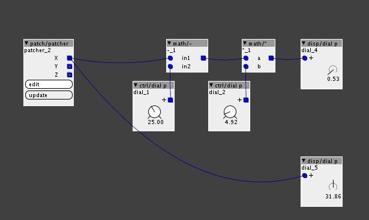

I am working with an accelerometer and I need to scale values, for example 0 -10 to 37-120.
Is there some object to do this or I have to go te raw way?
Thanks in advance...
x.x

I am working with an accelerometer and I need to scale values, for example 0 -10 to 37-120.
Is there some object to do this or I have to go te raw way?
Thanks in advance...
x.x
Thanks lokki. The exact values I get is 25-38 and i want to control all the range of a vcf filter frequency. What range I should go and how?
Thanks in advance
38 -25 = 13
64 / 13 (you get the multiplier from that) = 4.92
so a subtraction of 25, to get it zero based and a multiplication by 4.92 should get you a range of 0 to 64. then convert it via unipolar to bipolar to -64 64 range if needed.
Is this the proper way to implement this. If it is it doesnt work for me. Waht am I missing?. Sorry for this silly questions.
All the best and thanks for be patient.

I have came back to my axoloti prototype instrument but I am not getting the expected scaling result from accelerometer with this patch.
Some idea about what I am doing bad.
Thanks...
yeah, the multiplication is wrong...
what you have to remember is that 64 in axoloti = 1.0 we are not dealing with floating point multiplication here.
i.e. 64 x 32 = 32 ! , this should be read as 1.0 x 0.5 = 0.5
so what you need to do is 38-25 = 13 correct , this gives you the range
now what we want is to scale this up , to a full range... of 64... we cannot just multiply by 4.92, as this is basically doing something like 0.2 x (4.92/64) , hence why your seeing a really small value)
we actually need to scale it up to the 1.0 (=64) range, the easy way to do is to shift it by 8, (0.2 << 3 = 1.6 ), then multiply it by a fraction to bring it (accurately) to 0..1.0 this is 39.3846154(etc), but 39.37 is probably close enough, so we get a patch like:
(there are other ways to do this using scripts etc, but this is perhaps the easy way to understand it)
btw... you dont really need to understand the maths behind this, you can do this fairly pragmatically....
use a -c to bring the lowest point to zero, then if the range is smaller than 64, add a shift to increase the value, and then a *c to reduce it, just play with the values and you'll quickly find the necessary values.
(if you dont shift enough, you wont be able to get to 64, if you shift too much, then the *c at max wont get you any where near the range)
It works! Thank you very much. Only a detail. Is it possible not use dials for introduce constant values?
how do you mean? how do you want to do it?
the short answer is yes...
for ints you have things like 'const/i'
for these 'floats' is a bit more tricky , you can add constants in code, and you could use one-liner.... these all work if you know a bit more about how these floating point numbers are represented in binary, but this is a bit advanced for many users.
(if you want you can see the presentation by using a hex object, but I'm not going to explore this further here)
an idea for the longer term, is to combine the idea of params and attributes (which are constants), such that a user can just mark a dial as constant, which will make it more efficient (from a compiling perspective) , but at the same time make it an easier concept for users to understand
(end users just needs to know fixed values are more efficient, so only make thing variable when you need to change 'on the fly')
there are always many solutions 
unfortunately its not just a case of adding a new factory object, as we dont have code for visualisation of a float point attribute , similarly you need code generation code for attributes... so its not just a new factory object, but rather requires changes to the editor code (in java), and therefore an release.
this could, of course, be done as interim solution, but personally, I dislike extending something that is planned to be removed anyway... unless its causing a major issue.... Id prefer to spend time on the 'proper solution'
... thats just my opinion, if other developers want to spend time on this, then I'm sure it would be appreciated.